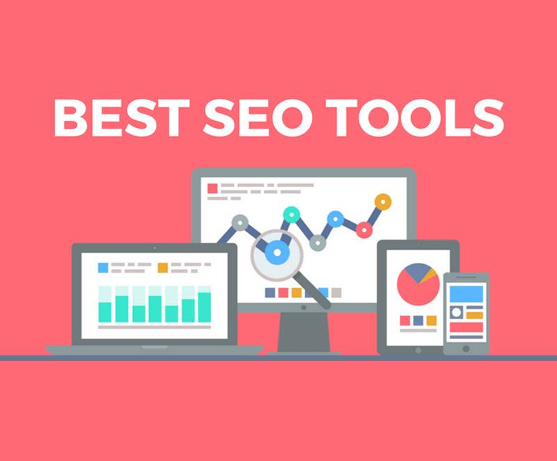

Blog //
Top 10 best free SEO tools
Like it or not, SEO is a big part of your online business. It's the largest source of free organic traffic, leads, and customers. Today, there is a wealth of free seo tools to help with day-to-day maintenance and to speed up the research that goes towards keeping a website healthy.
While it is nice to have a large arsenal of tools at one's disposal, it will be even more useful if you know how to wield them to their full potential.

Let's look at the 10 top free SEO tools
- Search Console Google Search Console is a tool that cannot be missed. Here's where Google will communicate any issues with your site, and it's also where you can monitor its performance, submit content for crawling, view the search queries that brought visitors to your site, monitor backlinks. There is a lot of useful stuff here and it's worth spending some time here every week.
- Keyword Tool Keyword Tool is an alternative to Google Keyword Planner, the free version allows you to generates up to 750+ long-tail keyword suggestions for every search term.
- Google Analytics Google Analytics is an integral part of your business marketing. Virtually all the actionable and important data about site visitors, traffic, etc., comes from this critical source. There is no other data source that provides high quality and detailed information like Google Analytics. In a Google-dominated era, it's what we have to work with. Most of the other data tools simply piggyback on Google's data using the API.
- MozBar
SEO has a lot to do with knowing the right stuff and the MozBar helps you discover the right stuff at a glance. The MozBar button sits right up in your browser toolbar - the place where all the action is going on. Click on the MozBar, and you generate an instant report on the website you're visiting.
You can position the MozBar at the top, side, or bottom of your browsing window at all times. The toolbar has three main categories of data - Page Elements, Page Attributes, and Link Data. Page Elements displays the nuts-and-bolts of onpage SEO. There's a lot of information accessible at a glance. You can see the various tags - title, description, H1s, etc. - SEOWorkers Analysis Tool The Analysis Tool allows you to plug in a website URL — any website, even if it's not yours — and generate a report.
- Google Trends Google Trends not only allows you to compare the popularity of one keyword over another, it also tells you which keywords are rising in popularity in your markets, thereby allowing you to exploit the top keywords in your niche.
- SEOquake
Seoquake is used for Competitor Research. SEOquake is a free browser extension. It's like the MozBar, except that it pulls up more of the page's data. When you're researching your competitors or finding link opportunities, the SEOquake toolbar will come in very handy.
Some of the page data or metrics it shows are:
- The number of (external) links.
- Google index.
- SEM Rush rank.
- Alexa rank.
- Webarchive age (domain age).
- And more.
- Seed Keywords
Seed Keywords is used for Keyword Research. In Seed Keywords First, you create a scenario. Basically, you'll be asking a question.
Example: "If you were looking for shoes, what would you search for?"
Second, you're going to take the unique URL they give you and share it with as many people as you can. They can be your friends, social followers, or your email subscribers, mainly any of your contacts. Then, you wait.
When you get enough people answering your question, you'll have a list of legit search terms from real-life internet users. - SEOptimer
SEOptimer is used for SEO Audit. When it comes to SEO, it's great to know how well your overall SEO is. SEOptimer will help you know your website's SEO. It will show you yours on page metrics, such as keyword usage and user experience (ex: speed and mobile responsive). It'll also show you off page metrics, such as your backlink profile and Domain Authority (a Moz metric).
When it completes the audit, SEOptimer will grade your website and even give you recommendations. - LinkMiner
LinkMiner is used for Link Building and it takes it to a completely new level. Before LinkMiner, the Check My Links extension was the go-to tool for checking a page's links. But the difference between the 2 is LinkMiner gives you more about the broken link. Check My Links simply finds out if the link works or not.
Some of the data LinkMiner pulls up are Facebook Likes, DA and PA, backlink numbers from Moz, Ahrefs, or Majestic, and more. The reason it's useful is because you get to know how popular the broken link is. And if it has a good amount of links from authority blogs, you can get your broken link building on.
You can download the extension here.